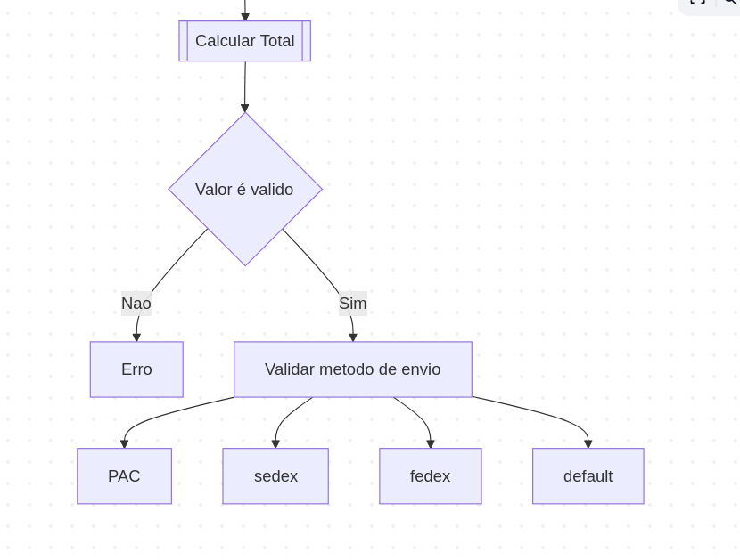

Refinamento, Modelagem e Design de Software
Foco: Refinamento, Modelagem e SOLID
Por que sistemas falham ao crescer?
def processar_tudo(pedido):
# 500 linhas de if/else
if pedido.tipo == "AULAS_MENSAIS":
if pedido.valor > 100000:
enviar_para_plenario()
elif pedido.tipo == "AULAS_QUINZENAIS":
if aluno.idade < 5:
alocar_piscina_aquecida()
Riscos: Rigidez, Fragilidade e Imobilidade.
function processarPedido() {
if (metodoEnvio === 'correios_sedex') {
valorFrete = 30.00;
} else if (metodoEnvio === 'correios_pac') {
valorFrete = 15.00;
} else if (metodoEnvio === 'fedex') {
valorFrete = 80.00 + (valorCarrinho * 0.05); // Taxa extra de 5% sobre o valor
} else {
valorFrete = 0; // Default perigoso
}
return valorFrete;
}
function processarPedido() {
if (metodoEnvio === 'correios_sedex') {
valorFrete = 30.00;
} else if (metodoEnvio === 'correios_pac') {
valorFrete = 15.00;
} else if (metodoEnvio === 'fedex') {
valorFrete = 80.00 + (valorCarrinho * 0.05); // Taxa extra de 5% sobre o valor
} else if (metodoEnvio === 'retirada') {
valorFrete = 0;
} else {
valorFrete = 0; // Default perigoso
}
return valorFrete;
}
do Latim, decomposito/decomponere
de- (negação/remoção/separação)
composito- ( colocar/compor, junto/composto)
"Decompor uma frase, Decompor um problema em problemas menores"

o que o sistema faz, independente da tecnologia
Identificar entidades (o que é)
comportamentos (o que faz)
relacionamentos (com quem faz)
class Projeto {
private int $id; // Identidade única
private string $nome;
private float $valorOrcado;
public function __construct(int $id, string $nome, float $valor) {
$this->id = $id;
$this->nome = $nome;
$this->valorOrcado = $valor;
}
}
Agregados são grupos de entidades que estão fortemente relacionadas e devem ser tratadas como uma unidade.
Raiz do Agregado: A entidade principal que controla o acesso às outras entidades do agregado.
Exemplo: Em um sistema de e-commerce, um Pedido pode ser um agregado que contém entidades como ItemPedido, Pagamento e Cliente. O Pedido seria a raiz do agregado, controlando o acesso e as regras de negócio relacionadas a ele.
class Orcamento {
private array $lancamentos = [];
// O Agregado garante a consistência:
// Não posso adicionar lançamento se o orçamento estiver fechado.
public function adicionarLancamento(float $valor, string $descricao) {
if ($this->estaFechado()) {
throw new Exception("Orçamento encerrado!");
}
$this->lancamentos[] = new Lancamento($valor, $descricao);
}
}
Comportamento: O que a entidade faz, suas ações e regras de negócio.
Dados: O que a entidade é, suas propriedades e atributos.
Evitar: Pensar apenas em dados (tabelas) e esquecer do comportamento (regras de negócio).
class Orcamento {
private float $valorTotal;
public function setValorTotal(float $valor) {
$this->valorTotal = $valor;
}
}
class Orcamento {
private float $valorTotal;
public function processarPagamento(float $valor) {
// regras e validações...
$this->valorTotal += $valor; // ou -=
}
}
class Projeto {
private string $status;
// Ruim: setStatus("Atrasado") -> Alguém fora da classe decide.
// Bom: O comportamento abaixo encapsula a regra de negócio.
public function verificarAtraso(DateTime $prazo): void {
if (new DateTime() > $prazo) {
$this->status = "Atrasado";
$this->notificarGerente();
}
}
}
É sempre bom lembrar que uma classe Usuario pode salvar em 3 lugares ao mesmo tempo
// O código de negócio não sabe que existe SQL.
// Ele pede ao "Repositório" o que precisa.
class ProjetoRepository {
public function buscarAtivos(): array {
// Aqui dentro pode ter um SELECT complexo,
// mas para o resto do sistema, são apenas objetos.
return $this->db->query("SELECT * FROM projetos WHERE status = 'Ativo'");
}
}
Foco: Implementação e Refatoração
De código que funciona → código que escala